Proyecto Dune — Casa Menor del Landsraad
Casa Portil
Serenísima Casa Portil de Vindeiro
Lo medido perdura.
Ningún caudal carece de señor;
ningún señor posee el caudal.
Identificación requerida
Lo medido perdura.
Ningún caudal carece de señor;
ningún señor posee el caudal.
Una Casa cuyo poder no descansa en el monopolio ni en la fuerza expansiva, sino en la administración técnica del recurso, la autoridad archivística y la capacidad de traducir conflicto en forma.
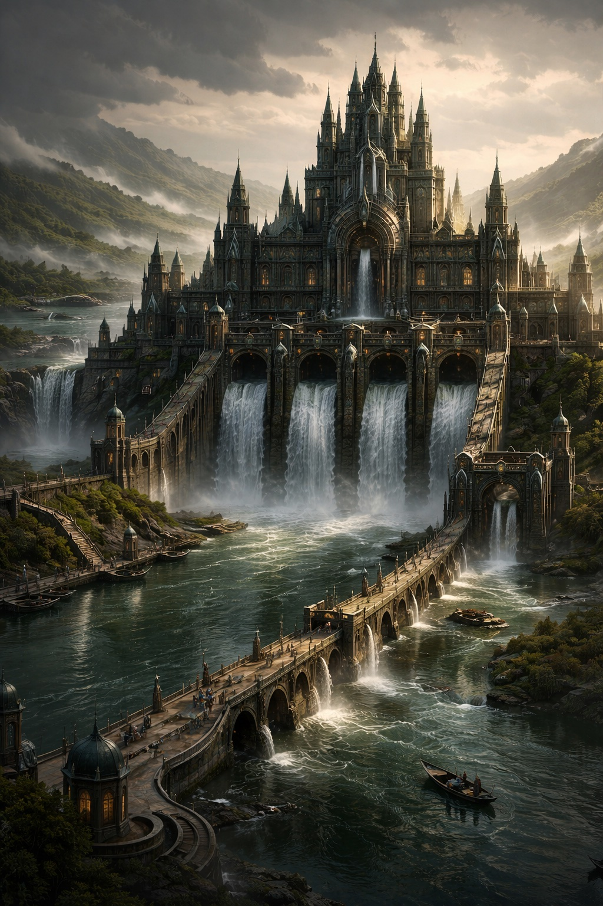
La Casa Portil se define en el protocolo imperial como una Casa Menor de feudo planetario, formalmente subordinada al orden corriniano, políticamente activa en el Landsraad e integrada en los circuitos económicos de la CHOAM. No es una casa de prestigio épico; es una casa de utilidad estructural.
Su autopercepción es singular. Se considera a sí misma "custodia del flujo" antes que simple dominadora territorial. Donde otras casas gobiernan hombres, Portil afirma gobernar relaciones. Donde otras casas acumulan recursos, Portil afirma ordenar caudales.
"Quien mide, hereda. Quien hereda, custodia. Quien custodia, devuelve."
— Libro Negro de los Caudales, principio rectorEl planeta Portil es un mundo hidrológico-litoral de mediana densidad demográfica, conocido por la irregular complejidad de sus sistemas de agua somera, estuarios ramificados, archipiélagos interiores y mesetas de niebla. No es un mundo oceánico puro; es un planeta de fronteras fluidas, donde tierra y agua se interpenetran sin cesar.
Su geografía política se organiza por cuencas, no por provincias geométricas. El dominio del territorio depende menos de la ocupación lineal que de la comprensión de los flujos.
"La verdadera unidad no es la provincia, sino la cuenca. No la ciudad aislada, sino la red de compuertas."
— Dossier de la Casa Portil, Trasfondo Ampliado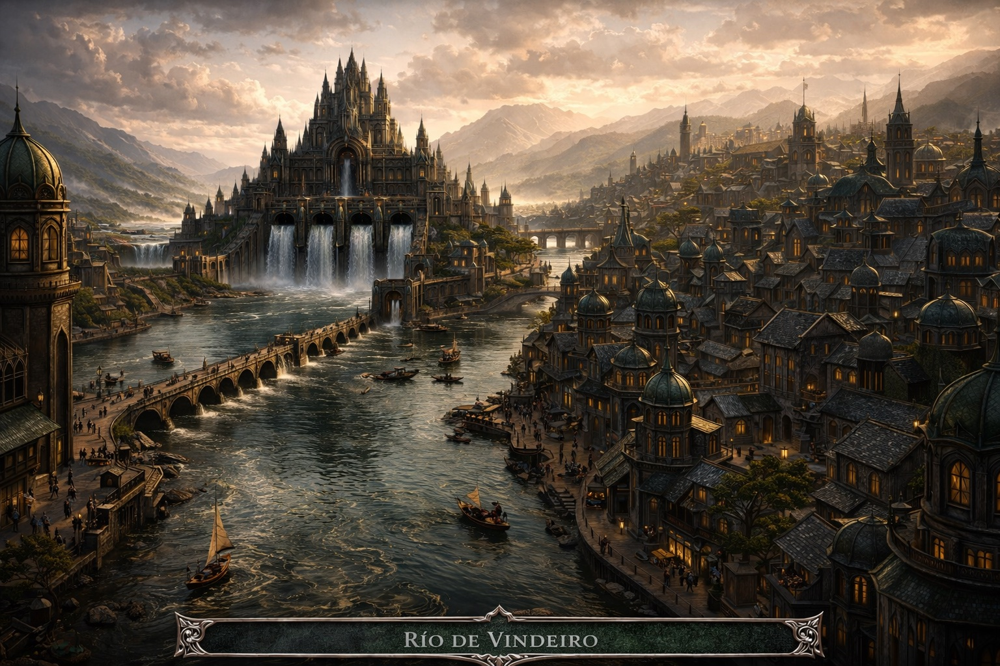
Cinco grandes complejos hidroterritoriales que organizan el poder, la identidad y la memoria del planeta.
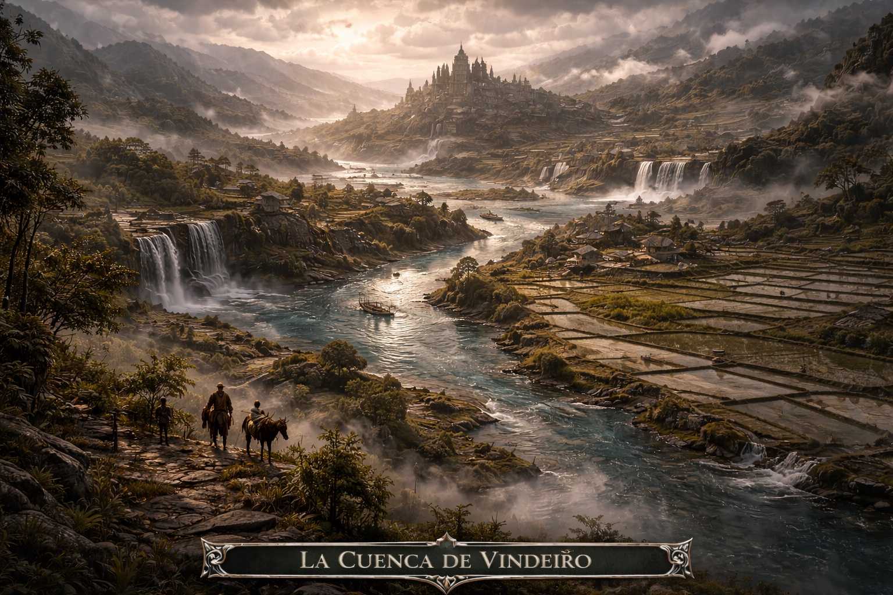
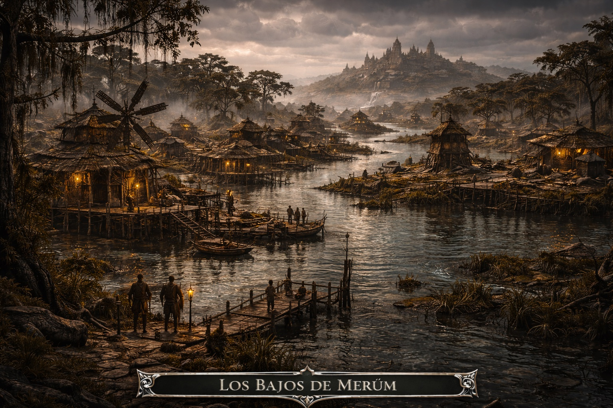
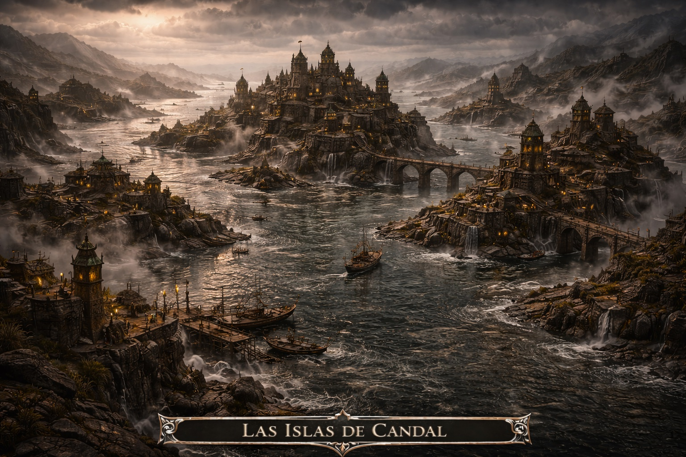
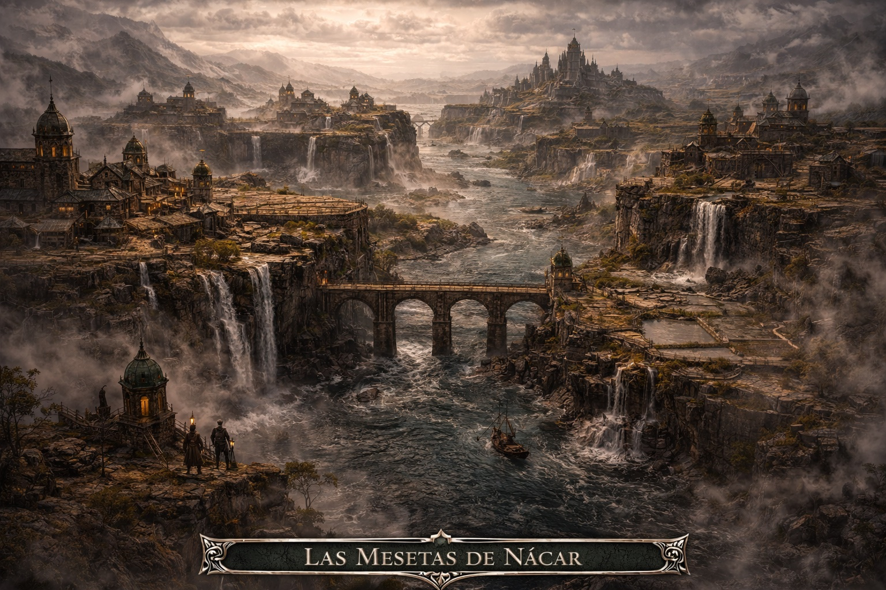
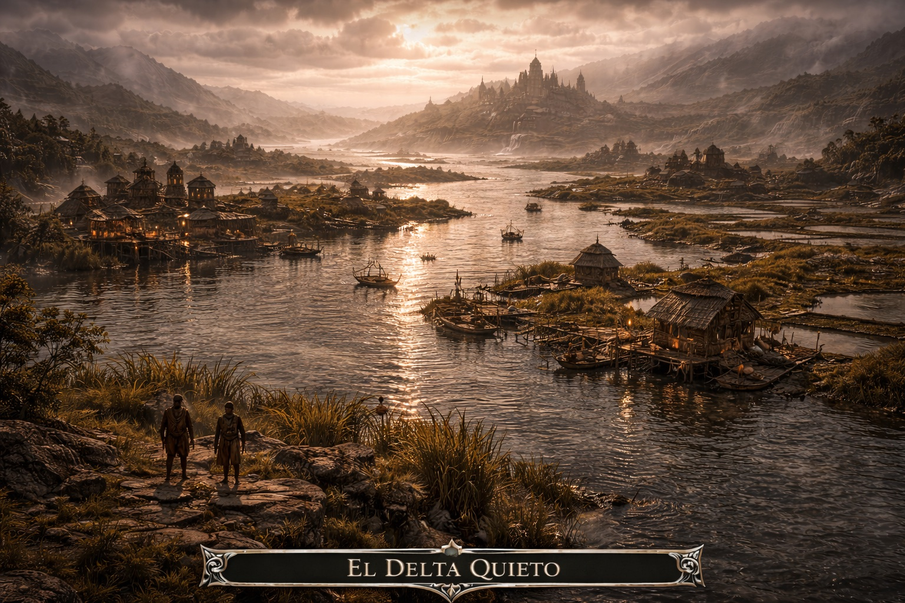
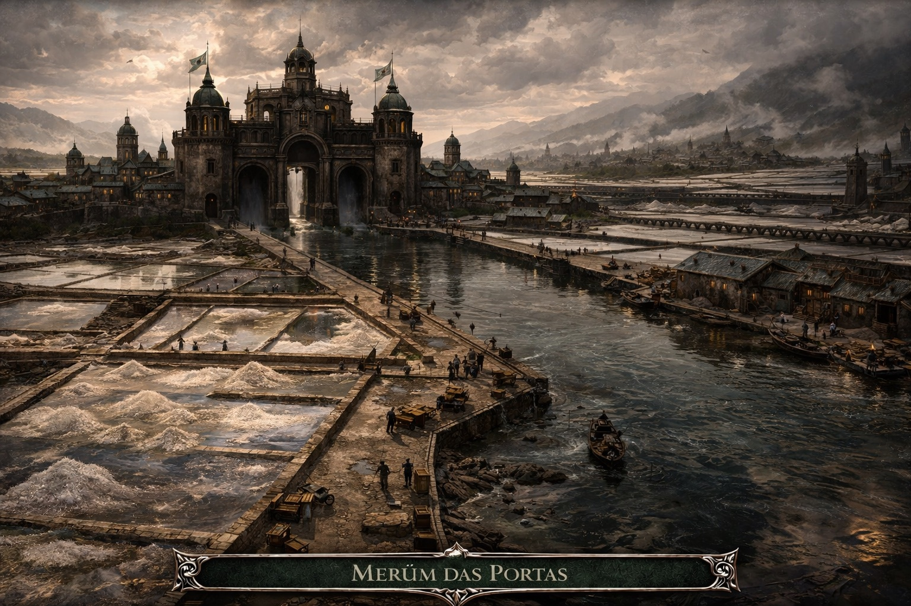
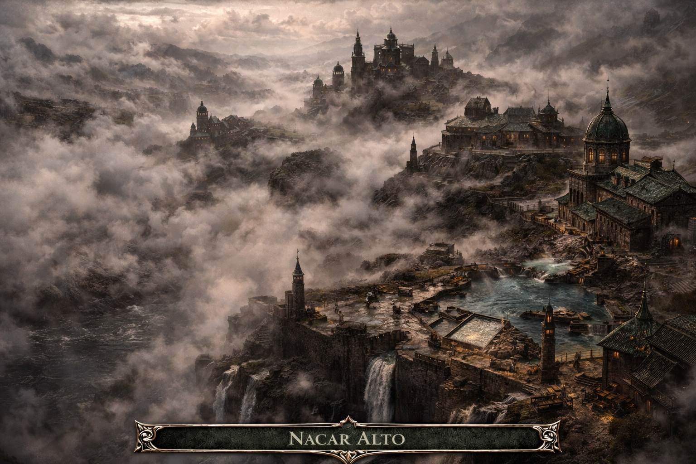
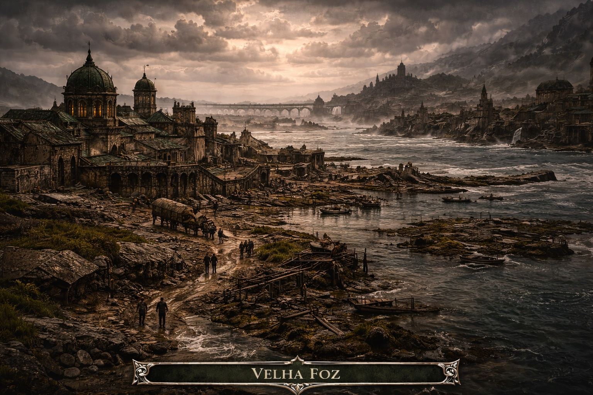
Un aparato militar mediano, profesionalizado y adaptado a escenarios de agua confinada. La doctrina: no conquistar el terreno; obligar al terreno a escoger por nosotros.
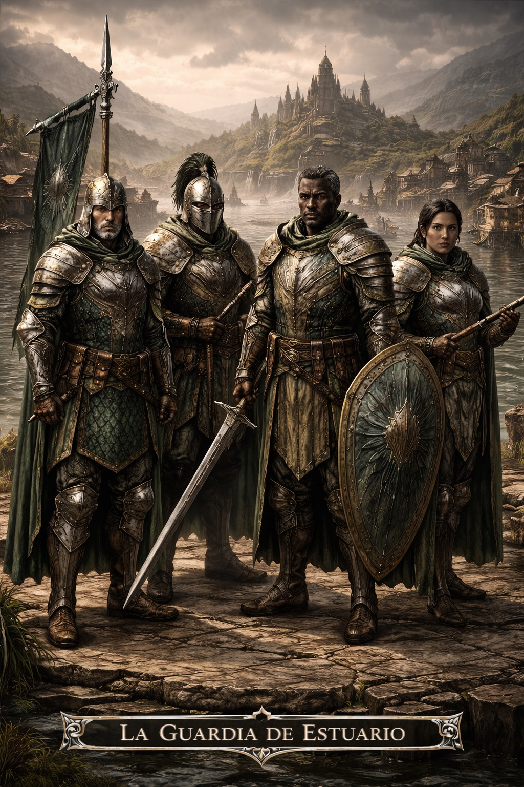
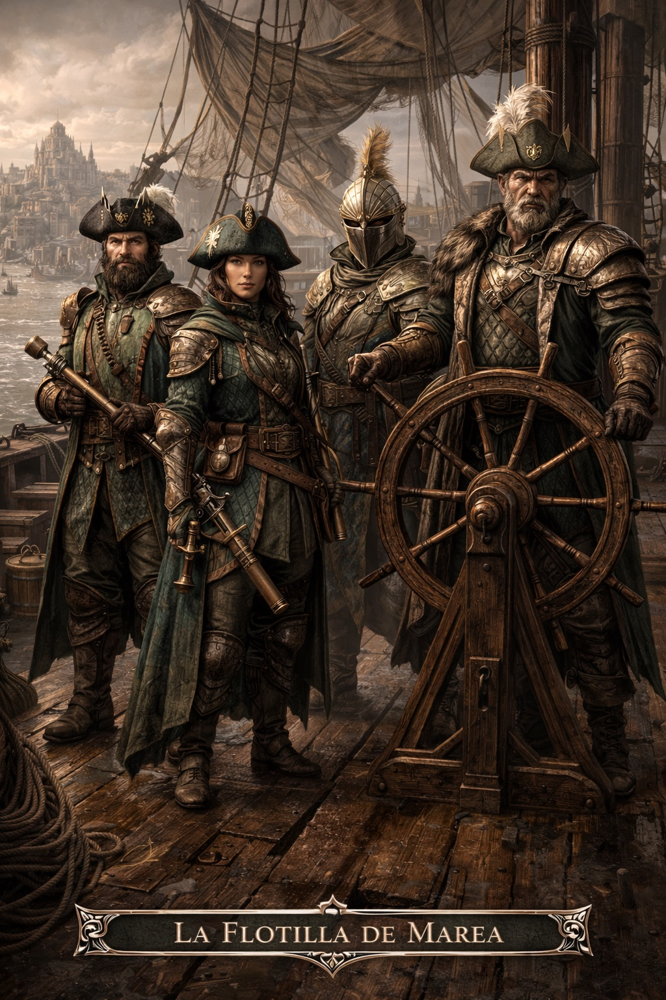
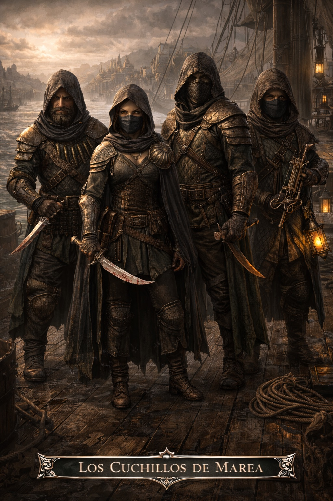
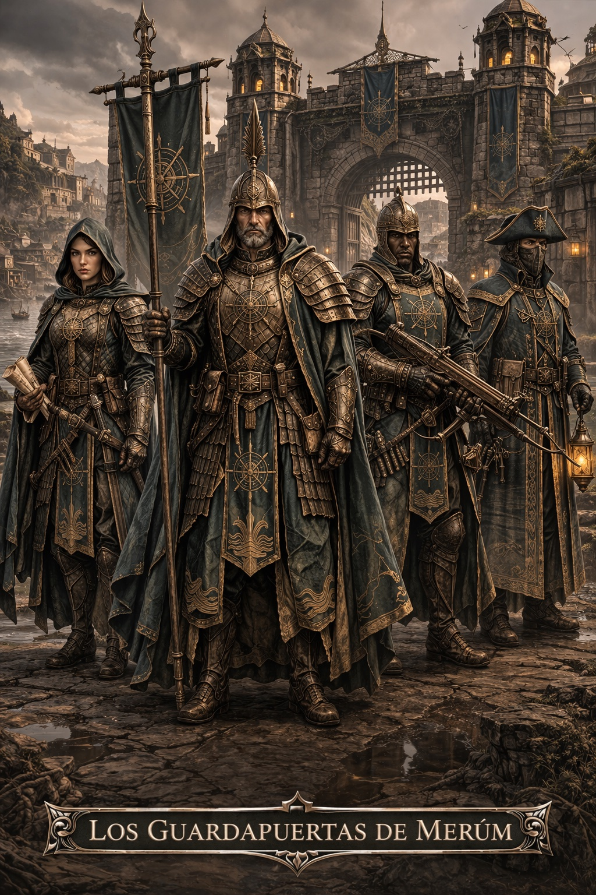
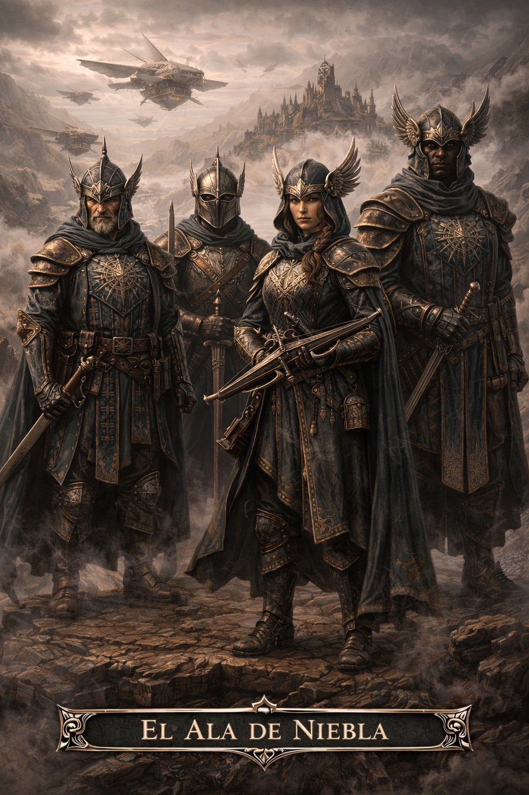
Simulador de gestión estratégica hostil donde el jugador no gobierna un ejército abstracto, sino una Casa Menor sometida a escasez, vigilancia, riesgo biológico, presión política y necesidad de rentabilidad.
Gobierna una Casa Menor en un medio hostil. Diseña y equilibra enclaves especializados, mantén vivas y rentables tus criaturas, absorbe crisis ecológicas, sanitarias y políticas, y logra que la continuidad de tu Casa prevalezca sobre el desgaste del sistema.
La experiencia debe sentirse como una administración bajo asedio estructural: cada expansión abre oportunidades, pero también multiplica costes, vulnerabilidades y puntos de fallo.
"El jugador no gobierna hombres. Gobierna relaciones. No acumula recursos. Ordena caudales."
— GDD, Principio rector del diseñoArquitectura cliente-servidor distribuida en .NET/C#. Cliente de administración + servicio de simulación + servicio de persistencia + modelo compartido. Prototipo orientado a producción académica con MVP funcional.
"Dune: Arrakis Dominion Distributed" es un simulador de gestión estratégica hostil concebido para un entorno de prototipado distribuido y para una defensa académica en la que el diseño lúdico y la arquitectura técnica deben aparecer mutuamente justificados. El prototipo debe servir a la vez como guía para el bloque técnico, como marco de coherencia para el bloque humanístico y como pieza maestra de inteligibilidad externa.
— GDD, Propósito del documento